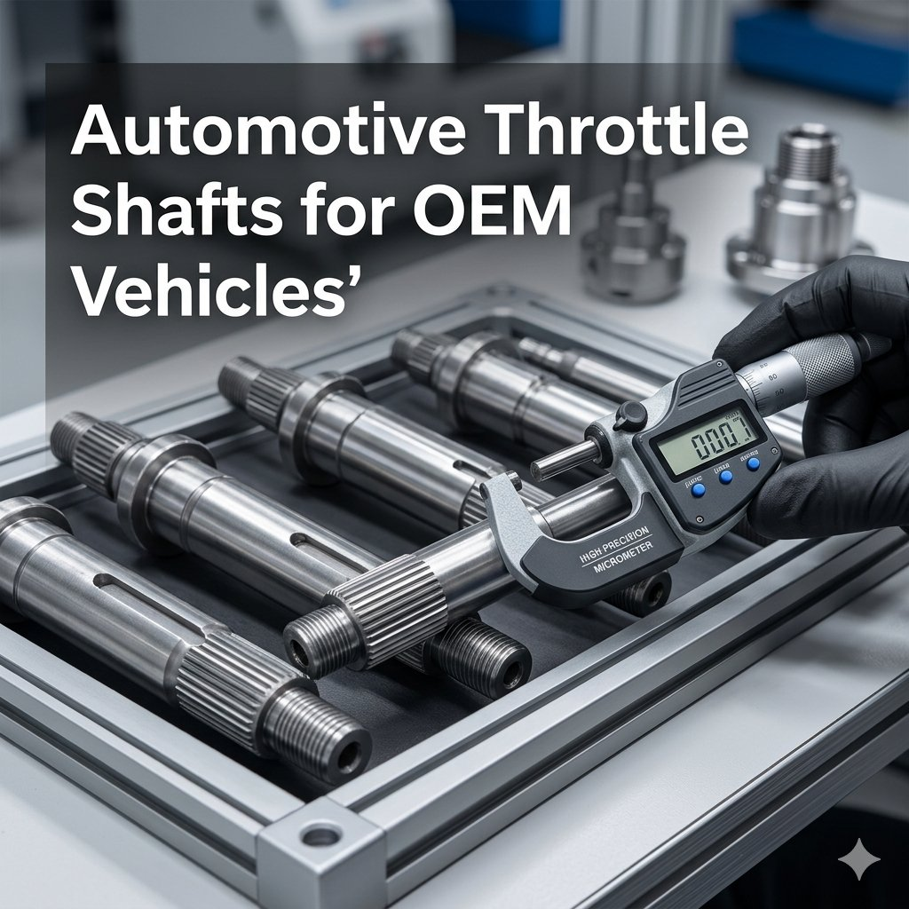

The automotive throttle shaft is a precision-engineered component mounted within the throttle body of an internal combustion engine, where it rotates the throttle plate — also called the butterfly valve — to regulate the volume of air entering the intake manifold. When the driver presses the accelerator pedal, the throttle shaft rotates to open or close the air passage, directly influencing the engine's power output, efficiency, and response. Precision is fundamental: even minor deviations in diameter, straightness, or surface finish result in binding, excessive wear, or inconsistent airflow. High-quality throttle shafts maintain tight tolerances and smooth finishes to deliver reliable, long-term performance across every driving condition.
In modern vehicles with electronic throttle control and drive-by-wire systems, accurate throttle shaft operation also ensures proper air-fuel mixture, stable idle, and precise engine response — making the component essential not only mechanically, but also within the engine's electronic management architecture.
Throttle shafts play a vital role in emissions compliance — precise airflow control maintains optimal combustion, reducing harmful emissions and helping vehicles meet stringent environmental regulations. Durability is equally important: high-quality materials and precise machining reduce wear and prevent premature failure, a priority for OEM manufacturers delivering long-lasting, trouble-free vehicles. Stainless steel is widely preferred for its strength, corrosion resistance, and smooth surface finish. Hardened steel excels under continuous mechanical stress. For high-performance applications, specialized coatings and surface treatments further reduce friction and wear — each material choice matched to the operating temperature, load conditions, and expected service life of the specific engine application.
Production begins with cutting raw material into accurate blanks, then CNC machining to achieve exact dimensions, tolerances, and straightness. Surface finishing — grinding, polishing, anti-corrosion coatings, and heat treatments — reduces friction between shaft and throttle plate while improving durability. Every shaft undergoes rigorous inspection measuring dimensional accuracy, straightness, surface finish, and rotational smoothness against stringent OEM requirements. Advanced quality control reduces warranty claims, improves customer satisfaction, and extends vehicle service life — ensuring each throttle shaft performs flawlessly from installation through thousands of operating cycles.
Automotive throttle shafts are essential across passenger cars, commercial trucks, high-performance sports vehicles, and heavy-duty equipment — wherever precise engine control and emissions compliance are required. In modern fuel-injected engines, the shaft works directly with sensors and the ECU to maintain optimal air-fuel ratios under varying driving conditions. As automotive technology evolves with hybrid systems, stricter emission norms, and lighter vehicle architectures, manufacturers are exploring advanced lightweight materials, low-friction coatings, and smart manufacturing technologies — ensuring automotive throttle shafts continue meeting the performance, efficiency, and reliability standards of next-generation OEM vehicles.
Attri Tech Machines Pvt. Ltd. is a global supplier and leading manufacturer exporter of automotive throttle shafts for OEM vehicles worldwide. With years of precision engineering experience, advanced manufacturing capabilities, skilled engineering teams, and strict quality control, the company produces throttle shafts that ensure smooth operation, durability, and full compliance with industry regulations — supporting vehicle manufacturers globally in delivering high-quality, reliable automotive systems that meet modern driver expectations.
View Product Details at Attri Tech Machines